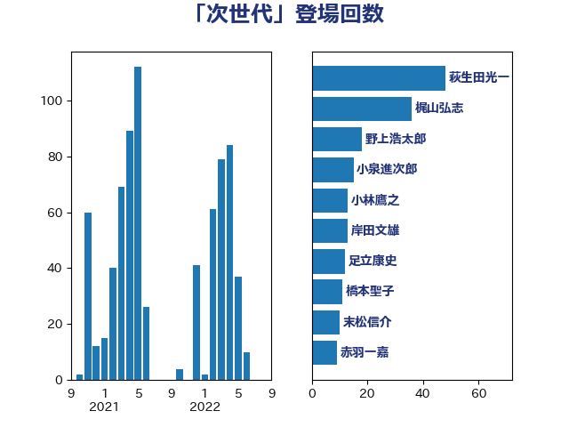

単語「次世代」

| 萩生田光一 | 自由民主党 | 48 回 |
| 梶山弘志 | 自由民主党 | 36 回 |
| 野上浩太郎 | 自由民主党 | 18 回 |
| 小泉進次郎 | 自由民主党 | 15 回 |
| 小林鷹之 | 自由民主党 | 13 回 |
| 岸田文雄 | 自由民主党 | 13 回 |
| 足立康史 | 日本維新の会 | 12 回 |
| 橋本聖子 | 無所属 | 11 回 |
| 末松信介 | 自由民主党 | 10 回 |
| 赤羽一嘉 | 公明党 | 9 回 |
| 田村憲久 | 自由民主党 | 8 回 |
| 田名部匡代 | 立憲民主党 | 7 回 |
| 菅義偉 | 自由民主党 | 7 回 |
| 城井崇 | 立憲民主党 | 6 回 |
| 柿沢未途 | 無所属 | 6 回 |
| 高良鉄美 | 無所属 | 6 回 |
| 山本左近 | 自由民主党 | 5 回 |
| 早坂敦 | 日本維新の会 | 5 回 |
| 笠井亮 | 日本共産党 | 5 回 |
| 葉梨康弘 | 自由民主党 | 5 回 |
| 丸川珠代 | 自由民主党 | 4 回 |
| 丹羽秀樹 | 自由民主党 | 4 回 |
| 寺田静 | 無所属 | 4 回 |
| 斉藤鉄夫 | 公明党 | 4 回 |
| 東徹 | 日本維新の会 | 4 回 |
| 梅村みずほ | 日本維新の会 | 4 回 |
| 池田佳隆 | 自由民主党 | 4 回 |
| 井上哲士 | 日本共産党 | 3 回 |
| 伊藤孝恵 | 国民民主党 | 3 回 |
| 古屋範子 | 公明党 | 3 回 |
| 吉川ゆうみ | 自由民主党 | 3 回 |
| 坂本哲志 | 自由民主党 | 3 回 |
| 安達澄 | 無所属 | 3 回 |
| 室井邦彦 | 日本維新の会 | 3 回 |
| 宮内秀樹 | 自由民主党 | 3 回 |
| 宮本岳志 | 日本共産党 | 3 回 |
| 小倉將信 | 自由民主党 | 3 回 |
| 山崎誠 | 立憲民主党 | 3 回 |
| 山本博司 | 公明党 | 3 回 |
| 岩渕友 | 日本共産党 | 3 回 |
| 森本真治 | 立憲民主党 | 3 回 |
| 武見敬三 | 自由民主党 | 3 回 |
| 浅野哲 | 国民民主党 | 3 回 |
| 渡辺猛之 | 自由民主党 | 3 回 |
| 玉木雄一郎 | 国民民主党 | 3 回 |
| 緑川貴士 | 立憲民主党 | 3 回 |
| 落合貴之 | 立憲民主党 | 3 回 |
| 谷合正明 | 公明党 | 3 回 |
| 遠藤敬 | 日本維新の会 | 3 回 |
| 野田佳彦 | 立憲民主党 | 3 回 |
| 金子恭之 | 自由民主党 | 3 回 |
| 長友慎治 | 国民民主党 | 3 回 |
| 青木愛 | 立憲民主党 | 3 回 |
| 高木かおり | 日本維新の会 | 3 回 |
| 高橋はるみ | 自由民主党 | 3 回 |
| 麻生太郎 | 自由民主党 | 3 回 |
| 中川郁子 | 自由民主党 | 2 回 |
| 中谷真一 | 自由民主党 | 2 回 |
| 井上英孝 | 日本維新の会 | 2 回 |
| 仁木博文 | 無所属 | 2 回 |
| 佐々木紀 | 自由民主党 | 2 回 |
| 佐藤英道 | 公明党 | 2 回 |
| 宗清皇一 | 自由民主党 | 2 回 |
| 小西洋之 | 立憲民主党 | 2 回 |
| 山下芳生 | 日本共産党 | 2 回 |
| 岡本あき子 | 立憲民主党 | 2 回 |
| 岩田和親 | 自由民主党 | 2 回 |
| 岸真紀子 | 立憲民主党 | 2 回 |
| 新妻秀規 | 公明党 | 2 回 |
| 根本幸典 | 自由民主党 | 2 回 |
| 森まさこ | 自由民主党 | 2 回 |
| 武田良太 | 自由民主党 | 2 回 |
| 沢田良 | 日本維新の会 | 2 回 |
| 河野太郎 | 自由民主党 | 2 回 |
| 泉健太 | 立憲民主党 | 2 回 |
| 泉田裕彦 | 自由民主党 | 2 回 |
| 渡辺創 | 立憲民主党 | 2 回 |
| 渡辺孝一 | 自由民主党 | 2 回 |
| 牧原秀樹 | 自由民主党 | 2 回 |
| 田村智子 | 日本共産党 | 2 回 |
| 石川博崇 | 公明党 | 2 回 |
| 石橋通宏 | 立憲民主党 | 2 回 |
| 神谷裕 | 立憲民主党 | 2 回 |
| 穀田恵二 | 日本共産党 | 2 回 |
| 藤田文武 | 日本維新の会 | 2 回 |
| 西岡秀子 | 国民民主党 | 2 回 |
| 西村康稔 | 自由民主党 | 2 回 |
| 西銘恒三郎 | 自由民主党 | 2 回 |
| 鈴木敦 | 国民民主党 | 2 回 |
| 長坂康正 | 自由民主党 | 2 回 |
| 階猛 | 立憲民主党 | 2 回 |
| 額賀福志郎 | 自由民主党 | 2 回 |
| たがや亮 | れいわ新選組 | 1 回 |
| ながえ孝子 | 無所属 | 1 回 |
| 三浦信祐 | 公明党 | 1 回 |
| 上野通子 | 自由民主党 | 1 回 |
| 中川正春 | 立憲民主党 | 1 回 |
| 中谷一馬 | 立憲民主党 | 1 回 |
| 伊佐進一 | 公明党 | 1 回 |
| 佐々木さやか | 公明党 | 1 回 |
| 佐藤啓 | 自由民主党 | 1 回 |
| 古賀友一郎 | 自由民主党 | 1 回 |
| 吉川赳 | 無所属 | 1 回 |
| 吉田統彦 | 立憲民主党 | 1 回 |
| 吉良よし子 | 日本共産党 | 1 回 |
| 堀内詔子 | 自由民主党 | 1 回 |
| 堤かなめ | 立憲民主党 | 1 回 |
| 大塚耕平 | 国民民主党 | 1 回 |
| 大家敏志 | 自由民主党 | 1 回 |
| 大島敦 | 立憲民主党 | 1 回 |
| 大野敬太郎 | 自由民主党 | 1 回 |
| 奥下剛光 | 日本維新の会 | 1 回 |
| 安江伸夫 | 公明党 | 1 回 |
| 宮口治子 | 立憲民主党 | 1 回 |
| 小宮山泰子 | 立憲民主党 | 1 回 |
| 小寺裕雄 | 自由民主党 | 1 回 |
| 小山展弘 | 立憲民主党 | 1 回 |
| 小野田紀美 | 自由民主党 | 1 回 |
| 山口晋 | 自由民主党 | 1 回 |
| 山口那津男 | 公明党 | 1 回 |
| 山田勝彦 | 立憲民主党 | 1 回 |
| 山谷えり子 | 自由民主党 | 1 回 |
| 岡本三成 | 公明党 | 1 回 |
| 岡田克也 | 立憲民主党 | 1 回 |
| 川田龍平 | 立憲民主党 | 1 回 |
| 市村浩一郎 | 日本維新の会 | 1 回 |
| 平山佐知子 | 無所属 | 1 回 |
| 徳永エリ | 立憲民主党 | 1 回 |
| 有村治子 | 自由民主党 | 1 回 |
| 朝日健太郎 | 自由民主党 | 1 回 |
| 木原誠二 | 自由民主党 | 1 回 |
| 木村英子 | れいわ新選組 | 1 回 |
| 杉田水脈 | 自由民主党 | 1 回 |
| 松下新平 | 自由民主党 | 1 回 |
| 松山政司 | 自由民主党 | 1 回 |
| 枝野幸男 | 立憲民主党 | 1 回 |
| 柳ヶ瀬裕文 | 日本維新の会 | 1 回 |
| 榛葉賀津也 | 国民民主党 | 1 回 |
| 横山信一 | 公明党 | 1 回 |
| 横沢高徳 | 立憲民主党 | 1 回 |
| 武部新 | 自由民主党 | 1 回 |
| 江島潔 | 自由民主党 | 1 回 |
| 江藤拓 | 自由民主党 | 1 回 |
| 池畑浩太朗 | 日本維新の会 | 1 回 |
| 河野義博 | 公明党 | 1 回 |
| 浜口誠 | 国民民主党 | 1 回 |
| 清水真人 | 自由民主党 | 1 回 |
| 熊谷裕人 | 立憲民主党 | 1 回 |
| 猪口邦子 | 自由民主党 | 1 回 |
| 田中健 | 国民民主党 | 1 回 |
| 田中英之 | 自由民主党 | 1 回 |
| 田村まみ | 国民民主党 | 1 回 |
| 田村貴昭 | 日本共産党 | 1 回 |
| 矢倉克夫 | 公明党 | 1 回 |
| 石井啓一 | 公明党 | 1 回 |
| 石井章 | 日本維新の会 | 1 回 |
| 石井苗子 | 日本維新の会 | 1 回 |
| 石垣のりこ | 立憲民主党 | 1 回 |
| 石川香織 | 立憲民主党 | 1 回 |
| 礒崎哲史 | 国民民主党 | 1 回 |
| 神津たけし | 立憲民主党 | 1 回 |
| 神田潤一 | 自由民主党 | 1 回 |
| 福島伸享 | 無所属 | 1 回 |
| 空本誠喜 | 日本維新の会 | 1 回 |
| 篠原豪 | 立憲民主党 | 1 回 |
| 細田健一 | 自由民主党 | 1 回 |
| 美延映夫 | 日本維新の会 | 1 回 |
| 芳賀道也 | 国民民主党 | 1 回 |
| 茂木敏充 | 自由民主党 | 1 回 |
| 藤井比早之 | 自由民主党 | 1 回 |
| 藤原崇 | 自由民主党 | 1 回 |
| 藤川政人 | 自由民主党 | 1 回 |
| 輿水恵一 | 公明党 | 1 回 |
| 重徳和彦 | 立憲民主党 | 1 回 |
| 野田国義 | 立憲民主党 | 1 回 |
| 野田聖子 | 自由民主党 | 1 回 |
| 金子俊平 | 自由民主党 | 1 回 |
| 金村龍那 | 日本維新の会 | 1 回 |
| 長谷川岳 | 自由民主党 | 1 回 |
| 関芳弘 | 自由民主党 | 1 回 |
| 青山大人 | 立憲民主党 | 1 回 |
| 須藤元気 | 無所属 | 1 回 |
| 高木啓 | 自由民主党 | 1 回 |
| 高野光二郎 | 自由民主党 | 1 回 |
| 鶴保庸介 | 自由民主党 | 1 回 |